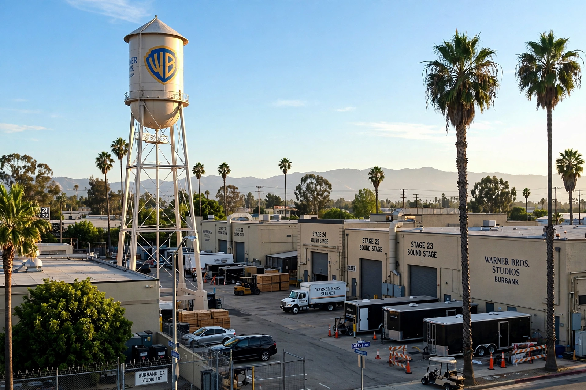

Warner Bros.
| Warner Bros. Entertainment Inc. | |
|---|---|
 | |
| Industry | Entertainment |
| Founded | April 4, 1923; Hollywood, Los Angeles, California, U.S. |
| Founders | Harry Warner, Albert Warner, Sam Warner, Jack L. Warner |
| Headquarters | 4000 Warner Boulevard, Burbank, California |
| Parent | Warner Bros. Discovery |
| Divisions | Warner Bros. Pictures; Warner Bros. Television; Warner Bros. Animation; New Line Cinema; DC Studios |
Warner Bros. Entertainment Inc. (WBEI), commonly known as Warner Bros. (WB), is an American filmed entertainment studio headquartered at the Warner Bros. Studios complex in Burbank, California. Founded in 1923 by four brothers — Harry, Albert, Sam and Jack Warner — it is one of the "Big Five" major American film studios and a member of the Motion Picture Association. The studio pioneered motion pictures with synchronised sound, releasing the first "talkie", The Jazz Singer, in 1927.
History
The Warner brothers, sons of Polish-Jewish immigrants, began by exhibiting films and distributing them before incorporating Warner Bros. Pictures on April 4, 1923. Betting the company on Vitaphone sound-on-disc technology, they premiered The Jazz Singer (1927) — Sam Warner died the day before the premiere — and ushered in the sound era. In the 1930s the studio became known for gritty gangster films (Little Caesar, The Public Enemy), Busby Berkeley musicals, and stars such as James Cagney, Humphrey Bogart and Bette Davis, alongside the Looney Tunes cartoons featuring Bugs Bunny and Daffy Duck.
Jack Warner ran the studio until 1967. Warner Bros. was acquired by Kinney National in 1969, merged into Time Warner in 1990, passed to AT&T in 2018, and in 2022 was combined with Discovery, Inc. to form Warner Bros. Discovery.
Output and franchises
The studio's catalogue includes Casablanca, The Wizard of Oz (via MGM's library), the Harry Potter and The Lord of the Rings films (the latter through New Line Cinema), Christopher Nolan's The Dark Knight trilogy and Inception, the DC Comics superhero films, The Matrix, and the highest-grossing film of 2023, Barbie. Its television arm is one of the world's largest producers, responsible for series from Friends and The Big Bang Theory to The West Wing. Warner Bros. Studio Tour Hollywood and sister tours in London and Tokyo operate on its lots.